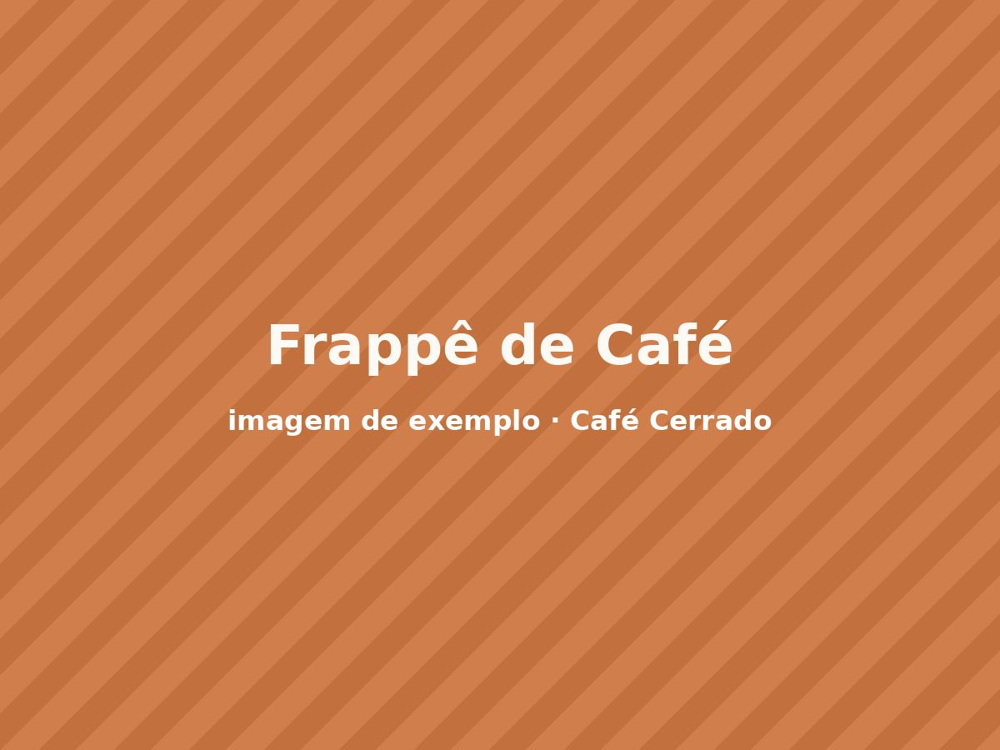
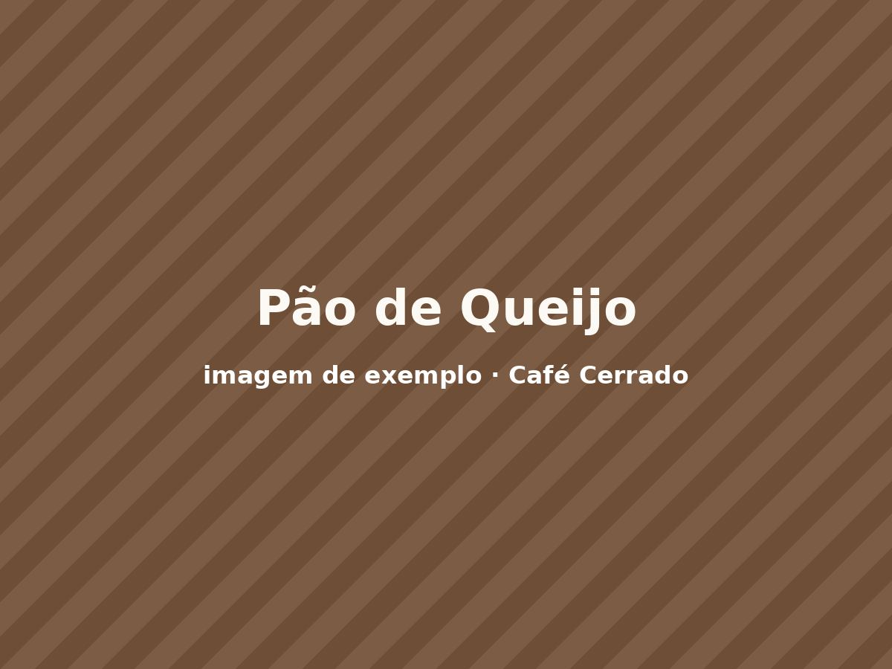
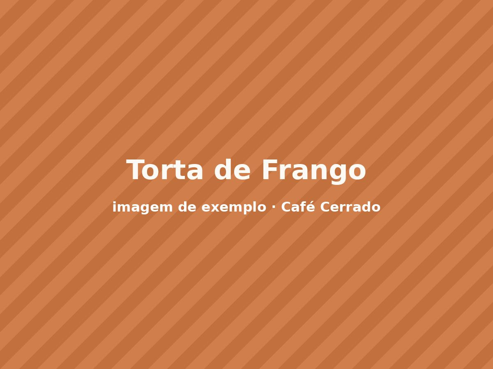
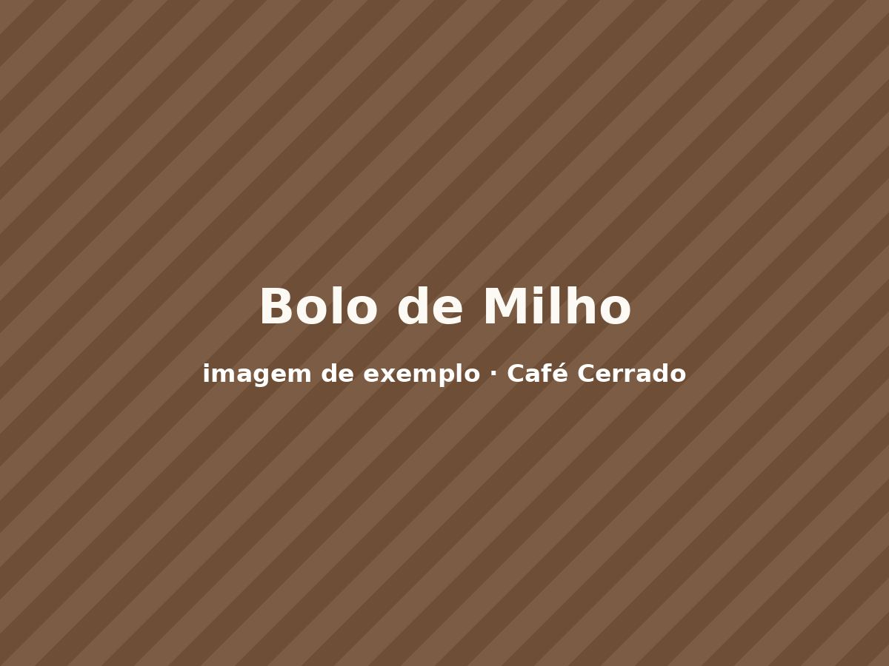
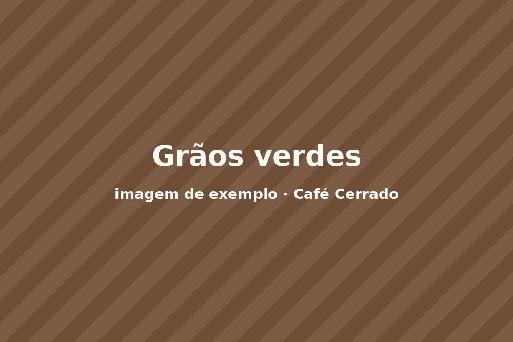

Espresso do Cerrado
Grãos de Alto Paraíso, torra média, corpo encorpado e final achocolatado.
Preços válidos para consumo no local. Todos os cafés podem ser preparados com leite vegetal por R$ 2,00 adicionais.
Grãos de Alto Paraíso, torra média, corpo encorpado e final achocolatado.

Duzentos mililitros em coador de papel, moagem média feita na hora do pedido.

Espresso duplo, leite vaporizado e canela do Cerrado por cima.

Espresso, leite vaporizado e calda de baunilha feita na casa.

Extração a frio por dezoito horas, servida com gelo e rodela de laranja.

Espresso batido com gelo, leite e chantili. Também sai sem lactose.

Porção com quatro unidades de polvilho azedo com queijo canastra.

Fatia generosa com massa amanteigada e recheio de frango desfiado.

Fatia de bolo cremoso feito com milho da feira do produtor.

Chocolate meio amargo com castanha-do-pará. Sem glúten.

| Sítio parceiro | Torra | Preço do pacote |
|---|---|---|
| Sítio Santa Rita | Clara | R$ 38,00 |
| Fazenda Vale Verde | Média | R$ 35,00 |
| Sítio Boa Esperança | Escura | R$ 33,00 |
Quer levar grãos para casa em outra moagem? Peça pelo formulário de contato.